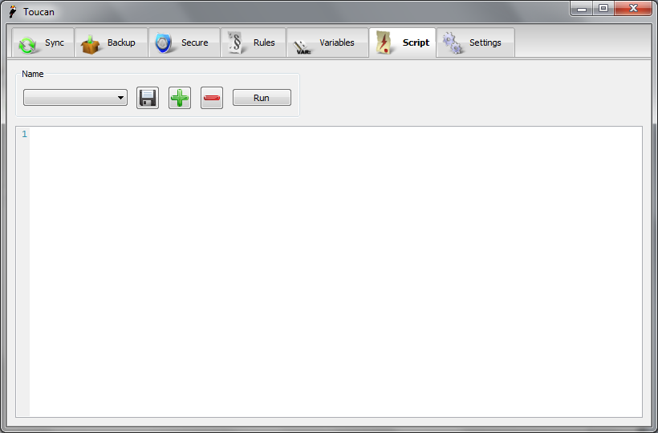

Scripts¶
Overview¶
A Script is used to tie a number of Jobs together and to provide a way to extend the built-in functionality of Toucan. Behind the scenes Toucan has an interpreter for the Lua programming language. It is a standard interpreter with a number of extra Toucan functions added and as such should accept and existing Lua scripts.
User Interface¶

The Script interface is very similar to the Variables interface. Scripts can be saved, added and removed using the standard controls in the top left of the window. To run a script simply press the Run button. The rest of the window is taken up by a large syntax highlighted text editor from creating scripts.
Lua Types¶
strings¶
In Lua strings can be written in quotes, such as "this is a string" or in double brackets, such as [[this is also a string]]. In Toucan it is preferable to use the form surrounded by square brackets. This is because when in quotes a \ is treated as an escape character and thus does not work as expected when writing Windows file paths. One solution is to just use a / instead, which is fully supported by Toucan or to use the square bracket form.
tables¶
When Toucan needs a list of strings it uses a table, for example when passing a list of paths to be encrypted. The same conditions about strings apply when they are in tables, an example of the preferred format is {[[C:\\path\\one]], [[@drive@\\path\\two]], [[D:\\path\\@date@]]} unlike some Lua tables we do not specify an index for each value, they have no use to Toucan and as such just clutter the function calls.
Toucan also uses tables when specifying options for Sync and Backup. An example Sync map would be {size = false, short = true}. This is technically an associative map. You do not need to set all of the attributes when specifying these options and any that you do not will take the default values shown on the functions documentation.
Command Reference¶
As well as all of the built in Lua commands Toucan supports the following extra commands:
sync¶
- sync(jobname)
Run a previously saved job
Parameters: - jobname – The name of the job
Return type: none
- sync(source, dest, function, checks = {size = true, time = false, short = true, full = false}, options = {timestamps = true, attributes = true, ignorero = false, ignoredls = false, recycle = false, previewchanges = false}, rules = "")
Run a sync with the given options
Parameters: - source – The source path
- dest – The destination path
- function – The function to perform, Copy, Mirror, Move, Equalise, Clean
- checks – The checks to perform when comparing files
- options – The options to use, for more information see
- rules – The name of a set of rules
Return type: none
backup¶
- backup(jobname)
Run a previously saved job
Parameters: - jobname – The name of the job
Return type: none
- backup(paths, location, function, format, ratio = 3, options = {password = false, test = false, solid = true}, rules = "")
Run a backup with the given options
Parameters: - paths – The files and folders to archive
- location – The location of the archive
- function – The function to perform, Complete, Update, Differential, Restore
- ratio – The compression ratio between 0 & 5
- options – The options to use, see for more information
- rules – The name of a set of rules
Return type: none
secure¶
- secure(jobname)
Run a previously saved job
Parameters: - jobname – The name of the job
Return type: none
- secure(paths, function, rules = "")
Run a secure with the given options
Parameters: - paths – The files and folders to secure
- function – Either Encrypt or Decrypt
- rules – The name of a set of rules
Return type: none
print¶
- print(message, showtime = false, error = false)
Output a message, either to the progress window or the command line
Parameters: - message – The message
- showtime – If true then the current time is displayed
- error – If true then the entry is highlighted, this has no effect on the command line
Return type: none
expand¶
- expand(variable)
Perform Variable expansion on the string.
Parameters: - variable – The string to expand
Returns: The expansion, or if none was found the original string
Return type: string
delete¶
- delete(path)
Deletes the given file, this does not work on folders
Parameters: - path – The path of the file to delete :type path: string :returns: Whether the file was successfully deleted :rtype: bool
copy¶
- copy(source, dest)
Copies the source file to the destination, this only applies to files and any existing file will be overwritten
Parameters: - source – The path to the source file
- dest – The path that the file should be copied to
Returns: Whether the file was successfully copied
Return type: bool
move¶
- move(source, dest)
Moves the source file to the destination, this only applies to files and any existing file will be overwritten
Parameters: - source – The path to the source file
- dest – The path that the file should be copied to
Returns: Whether the file was successfully moved
Return type: bool
rename¶
- rename(source, dest)
Renames the source file to the destination, this only applies to files and any existing file will be overwritten. This is the same as a copy
Parameters: - source – The path to the source file
- dest – The path that the file should be copied to
Returns: Whether the file was successfully renamed
Return type: bool
execute¶
- execute(path, async = false)
Exectues the file at the given path, this can be a file to open or a program to run
Parameters: - path – The path to be run
- async – If false the script will wait for the program to finish
Returns: The return value of the program is not async, otherwise nothing
Return type: int
getscript¶
- getscript(name)
Used to get the full path to a saved Toucan script. This can then be used to run a script with the following code:: dofile(getscript([[myscriptname]]))
Parameters: - name – The name of the script
Returns: The full path to the script
Return type: string
inputpassword¶
- inputpassword()
When run this command will prompt for a password, either on the command line or using the Password Dialog and this password will be used for all subsequent Secure and Backup with password jobs.
Return type: none
shutdown¶
- shutdown()
Shuts the computer down
Returns: Success or failure Return type: bool